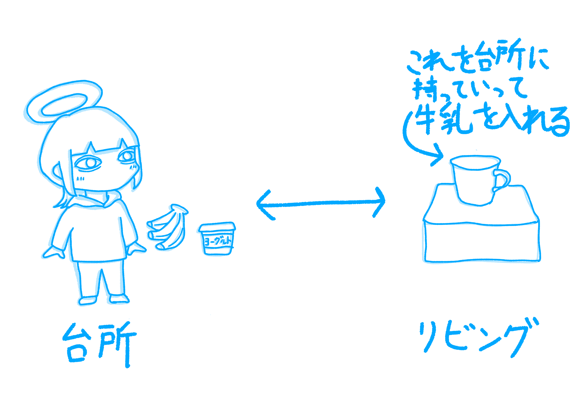

こんにちは、ザクザク食感です。
今日から社会人です。もう怠惰なままではいられないので、リモートワークだけど始業の2時間前に起きて、ちゃんと朝ご飯を食べます。
さて、ここで問題です。
【問】僕は今、台所で朝食の準備をしています。今日の朝食はバナナ、ヨーグルト、牛乳です。
オモコロチャンネルを見ながら朝食を食べるために、台所からリビングにそれらを運びたいです。
ですが、牛乳を注ぐためのコップがリビングにあるうえに、お盆を買っていないので、台所とリビングを何度か往復しなければいけません。
このとき、僕が最も効率よくリビングに朝食を揃えるには何往復かかるでしょうか？なお、僕が一度に手に持てるものは二つまでとします。

この場合の最短経路は、まずヨーグルトとバナナを持ってリビングに行き、それらを置いてコップを手に持って台所に戻り、牛乳を注いでまたリビングに戻れば良いので、一往復半が答えだと思います。
ですが、今朝の僕はまずコップを取りにリビングに向かい、キッチンに戻って牛乳を注ぎ、ヨーグルトとバナナを持ってリビングに行き、台所に戻ってコップを手に持ち、それをリビングに運んだので、二往復半していました。
台所とリビングの距離は5歩ぐらいなので、一往復増えるぐらい大した手間ではないのですが、コップを取りにリビングに向かってしまったときに失敗に気づき、ピクミンで上手くタスクを分担できなかったときみたいな気持ちになりました。
これに似た川渡り問題を散々解かされたのに結局何も役に立ってないじゃん！！！ピクミン4の発売も近いし、計画的に行動する練習を頑張ります。
それでは、さようなら。